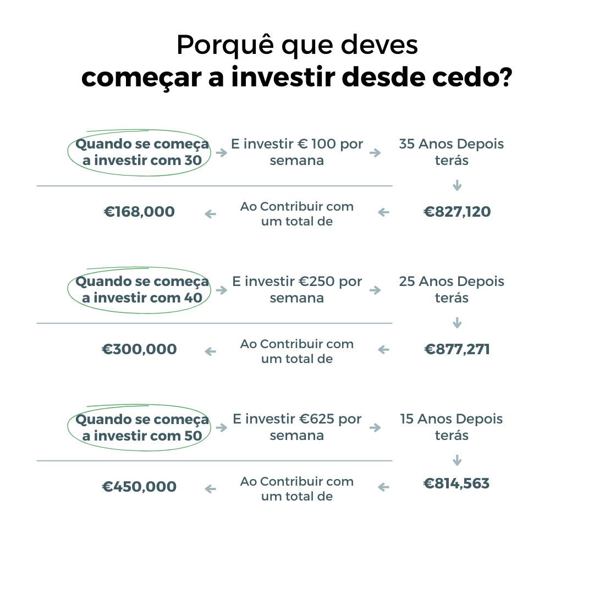
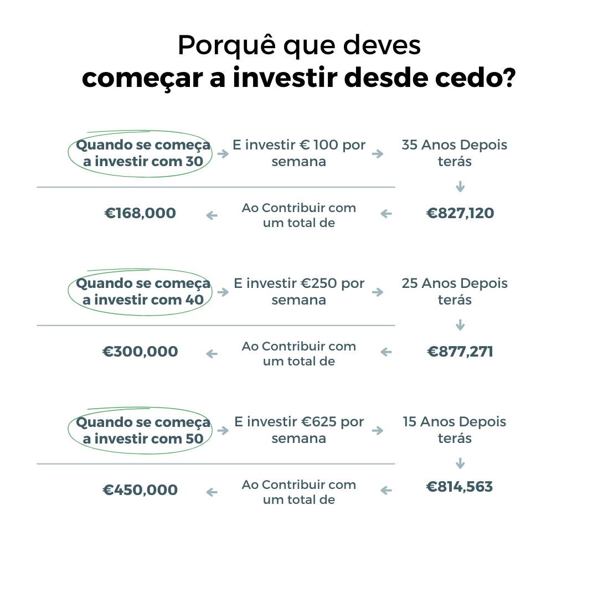

Os juros compostos são um conceito fundamental no mundo das finanças. Diferentemente dos juros simples, onde os ganhos são calculados apenas sobre o valor inicial, os juros compostos levam em consideração não apenas o capital inicial, mas também os juros acumulados ao longo do tempo.
A principal característica dos juros compostos, e o que o diferencia dos juros simples, é que este modelo financeiro permite o reinvestimento de capital mais juros em cada período de exercício.
Em outras palavras, os juros compostos são calculados sobre o capital inicial mais os juros acumulados em cada período de exercício.
Ao capitalizar o investimento, o capital reinvestido em cada período é maior, o que aumenta gradualmente o montante de juros obtidos. É uma espécie de bola de neve descendente que permite obter uma maior rentabilidade ao longo do tempo, utilizando o mesmo capital inicial. No entanto, outra característica dos produtos de investimento de juros compostos é que não é possível dispor dos juros gerados pelo capital até que o prazo estabelecido tenha terminado.
Os juros compostos são calculados como se mostra na fórmula abaixo. Só precisaremos de ter alguns dados como o capital inicial, os juros e o período. O primeiro passo é entender as variáveis desse cálculo:
 
